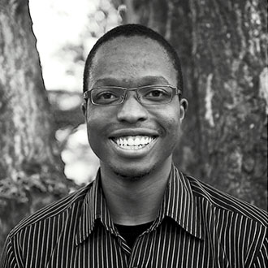
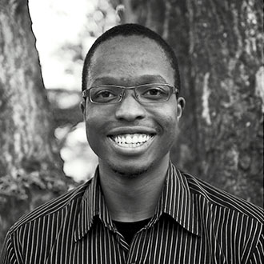

Marmanet exemplifies why sustainability is crucial
Nested in the central highlands of Kenya, the Marmanet forest acts as a microcosm to understand the importance of sustainable development on communities and the health of the environment. This is where our project is based. 50 years ago, the forest covered 40,000 hectares. Fast forward half a century, and over 90% of the forest has disappeared, and the local economy has collapsed. High unemployment and poverty is complemented by a loss of biodiversity and seasonal drought.
The highland forests of East Africa function as water towers. The vital water supply that flows from these forests not only supports major lakes such as Lake Victoria, but is critical to the two largest industries in the region: tea and tourism, and provides 10's of thousands of rural farmers and pastoralists with water. Without these forests, rain can't seep into the ground. Rivers and lakes are cut off from their water supply. Rainfall patterns are affected as the micro-climate is destabilized. Water-conflict erupts.
From 1980 and today, forest cover in Kenya has reduced by over 75%. The government aims to tackle this problem by planting 7.6 billion trees in 20 years, as part of its Vision 2030. Our goal is to recover forest land in a way that is respectful of human rights and needs. It is not enough to merely plant trees in order to restore ecosystems. Sustainability can only be achieved by realizing that humans are part and parcel of a forest ecosystem.
We need your help! Our vision is to link the climate change challenge with socioeconomic opportunities for local communities. We need your help to show that the forests can provide a good and lasting livelihoods to the families that live around it. This is the only way to restore the environment in a sustainable way, and secure its health for future generations.


 
